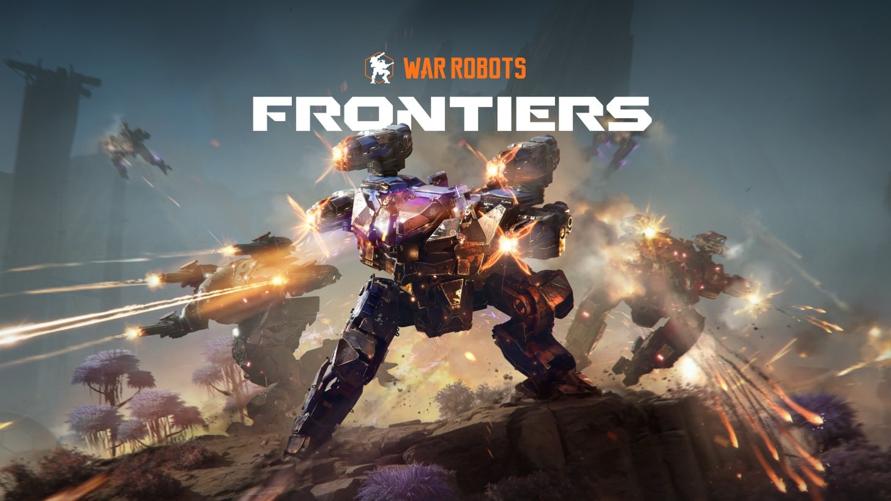
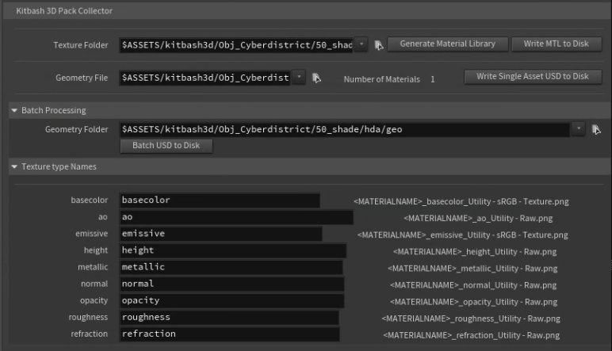
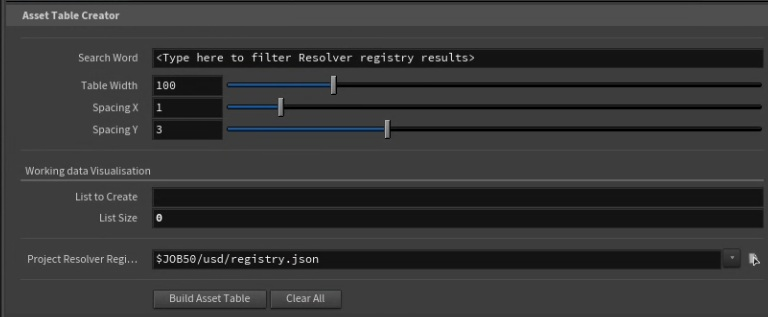

War Robots Frontiers
-
Client
MY.GAMES
-
Date
22-07-2024
-
Project link
- Role: Technical Artist / Pipeline TD
- Core Stack: Houdini (Solaris/Karma), USD, Unreal Engine, Python, JSON-based Resolver, HDA Development
- Main Focus: Batch Asset Ingest, Multi-Source Optimization (Kitbash & Unreal), Render Management & Karma Tuning, Editorial Pipelines
This project involved the production of an 80-90 second game cinematic delivered under
a tight schedule of 2-3 months.
My primary responsibility was ensuring that both incoming client assets and newly modeled, purchased, or marketplace assets were
ingested as rapidly and efficiently as possible into Houdini's Solaris/Karma context.
In addition to managing the early-stage environment layout, I oversaw the technical
rendering pipeline, strict color management, custom AOV generation for compositing, and
automated editorial daily deliveries.
I also managed and monitored global render farm utilization
throughout the production, optimizing render efficiency and diagnosing/patching Karma-specific
bugs under heavy deadline pressure.
The tool automatically parsed directories of raw OBJ and FBX files, ran them through our USD Asset Builder, correctly assigned and mapped textures and shader settings on the fly, and restructured the final USD primitive hierarchy based on strict naming conventions.
This eliminated days of repetitive manual asset prep.

I developed a dedicated toolset to extract these assets correctly, standardizing the incoming data and pipeline inputs to seamlessly ingest and reconstruct the models and materials directly inside Solaris for Karma rendering.
Because the project relied on a custom JSON-based asset/shot resolver, I designed all file-handling and caching nodes to strictly adhere to these relative environment paths, ensuring seamless data portability across the entire pipeline.
The tool directly queried and filtered by custom tags the JSON resolver’s asset database, dynamically instancing and organizing the available USD files into a clean, visual grid inside a single node.
This allowed layout artists to instantly see and select the exact kit pieces they needed for environment dressing.

This involved continuous render resource optimization and heavily profiling scenes to reduce memory usage. When encountering renderer-specific bottlenecks, I actively reverse-engineered and resolved Karma bugs, ensuring production stability under an intense timeline.
I also took charge of quality control and pipeline consistency, maintaining global color management (ACES) if something went wrong and automating the output formatting for daily editorial deliveries and reviews.